Начать с понятной системы
Если вы только начинаете заниматься трейдингом, вы можете сразу получить понятную систему и не тратить несколько лет на бесконечный поиск стратегий, терминов и противоречащих друг другу видео.
Покажу, как устроена моя торговля: где я торгую, почему работаю всего около 2 часов в день, как нахожу сделки и что нужно, чтобы стать прибыльным трейдером и стабильно зарабатывать с трейдинга.
Привет. Меня зовут Нурлан, и последние 3 года я занимаюсь трейдингом.
За это время я перепробовал практически всё: классический технический анализ, Smart Money, ICT, Fibonacci, различные индикаторы и торговые стратегии. Я провёл сотни часов за графиками, тестировал разные подходы, терял деньги и долго пытался понять, что действительно позволяет стабильно зарабатывать на рынке.
Со временем я начал разбираться в рынке гораздо глубже и наконец понял, что именно происходит за движением цены. На основе этого понимания я собрал для себя понятную систему: выбрал рынок, определил конкретное время для торговли и понял, на какие данные действительно нужно смотреть при принятии решений.
Вот примеры моих результатов.
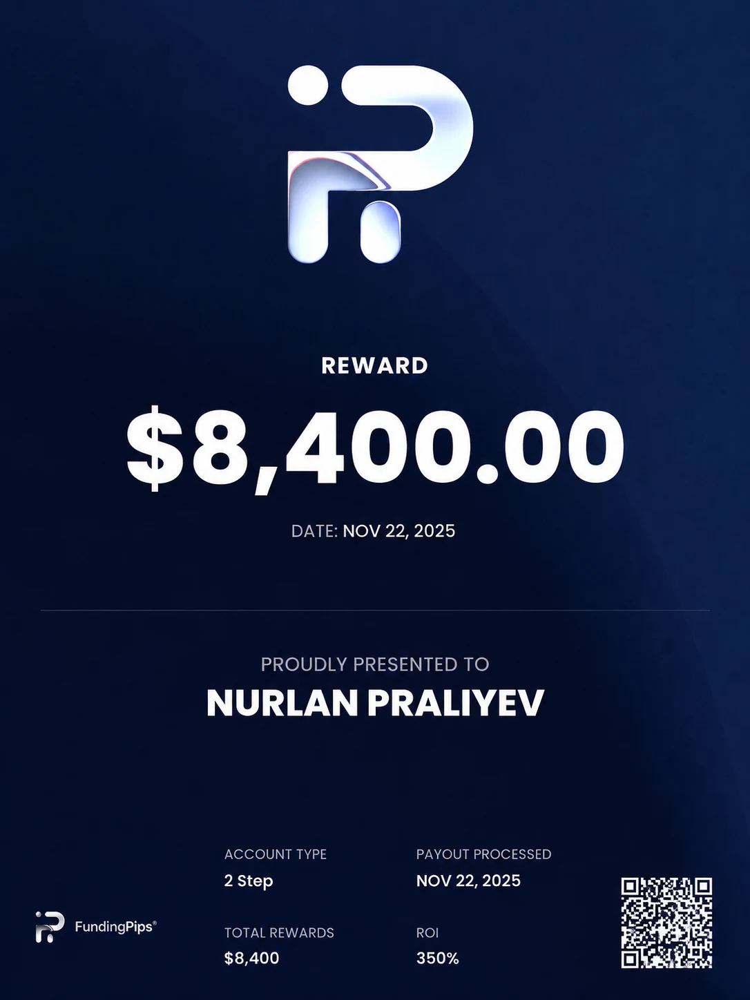

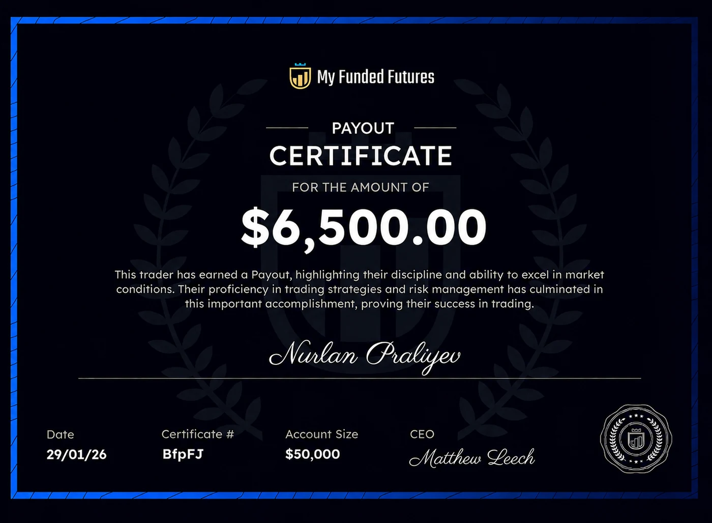
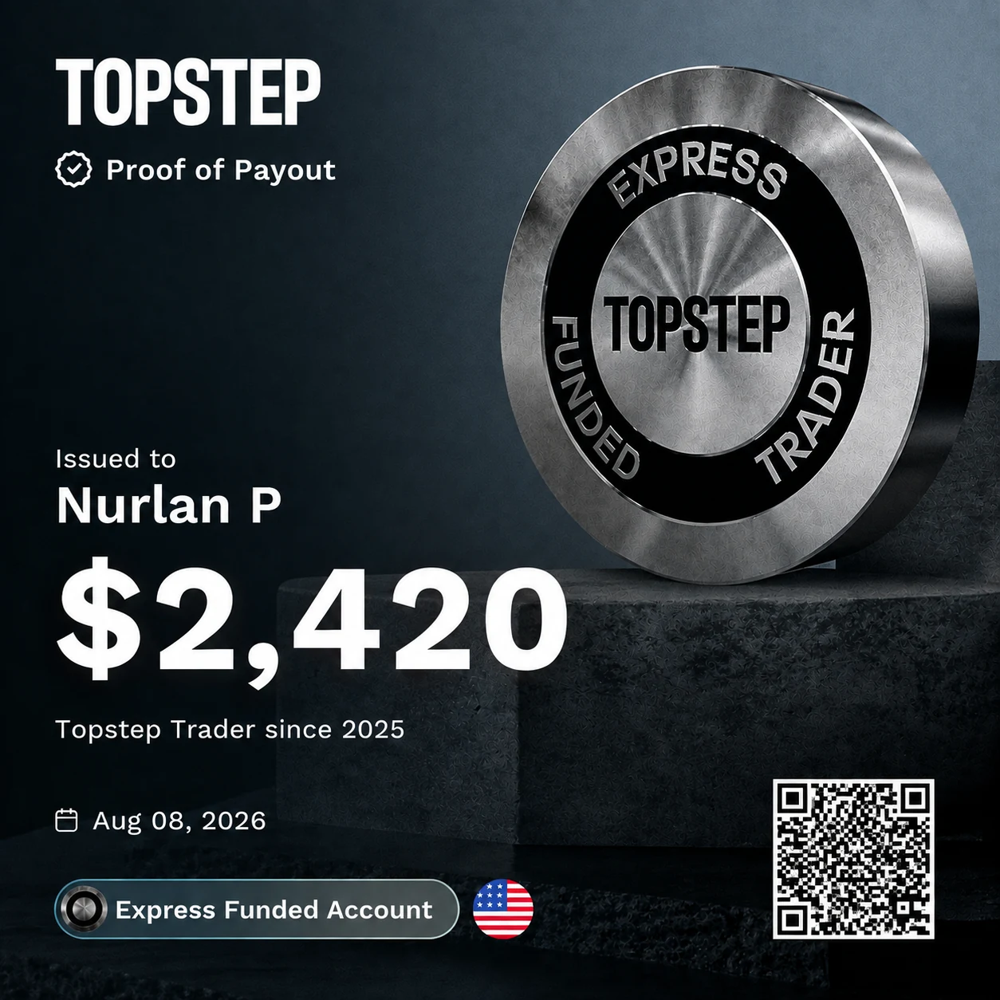
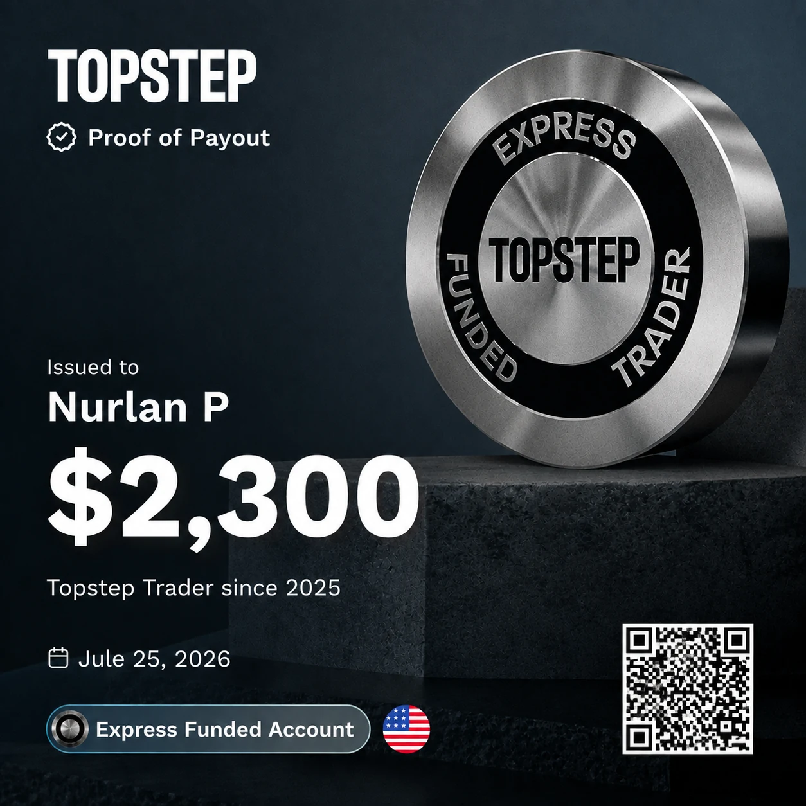
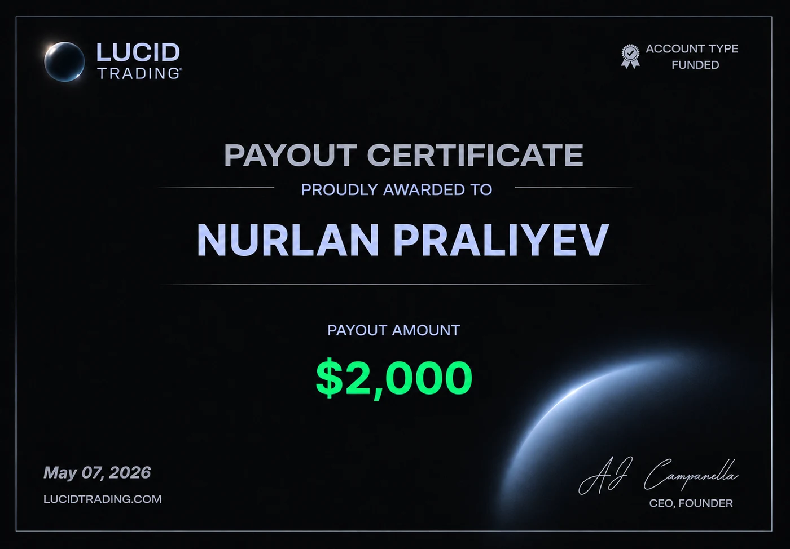
Сегодня моя торговля выглядит намного проще, чем несколько лет назад. Мне больше не нужно сидеть перед графиком весь день или каждую неделю искать новую стратегию. Я понимаю, что должен сделать до начала торговли, какие ситуации искать на рынке и при каких условиях открывать сделку.
Нужно решить две вещи: через что вы будете торговать и каким капиталом будете работать.
Для основной работы с графиком я использую TradingView.
Это платформа, где я смотрю золото, провожу анализ и открываю сделки. Если вы только начинаете, TradingView вам более чем достаточно.
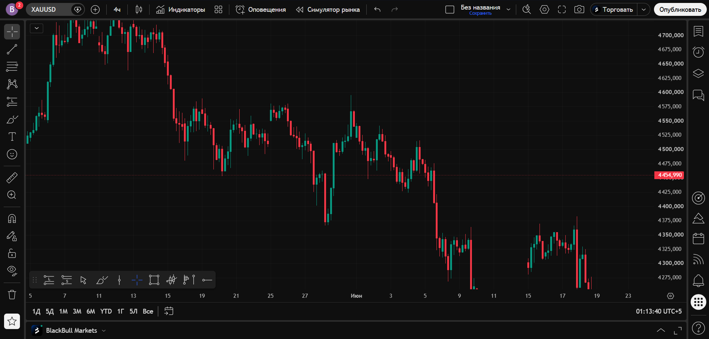
Чтобы открыть реальную сделку, к TradingView нужно подключить брокера.
В самой платформе есть раздел для подключения брокера.
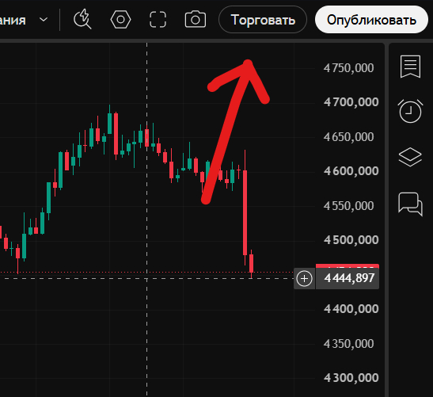
После нажатия откроется список доступных брокеров.
Я использую BlackBull Markets.
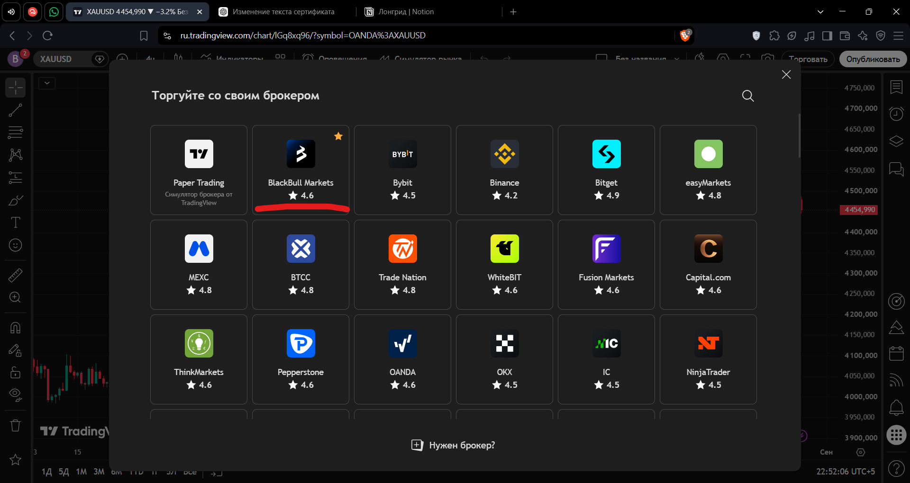
Новозеландский регулируемый брокер с головным офисом в Окленде. Здесь доступны TradingView, MetaTrader 5 и cTrader, а максимальное кредитное плечо может доходить до 1:500.
Для регистрации нужно заполнить заявку, подтвердить личность и адрес. После проверки документов — обычно около одного рабочего дня — можно создавать торговый счёт и выбирать его параметры.
Во время создания торгового счёта BlackBull предложит выбрать несколько параметров.
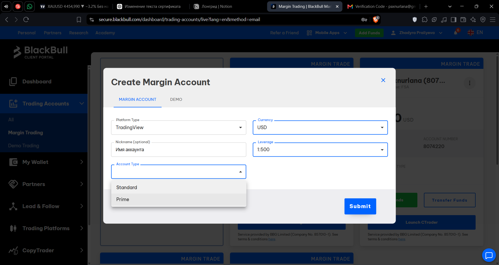
Здесь вы выбираете торговую платформу, размер плеча и тип счёта. Если собираетесь работать через TradingView — выбираете TradingView.
Нужно обязательно выбирать тип аккаунта Prime, потому что именно на нём узкие спреды и лучшие условия.
Теперь нужно решить, каким капиталом торговать. Есть два основных варианта.
Самый простой путь — пополнить брокерский счёт собственными деньгами и торговать ими.
Например, сейчас я публично показываю в Instagram челлендж, где торгую на собственном депозите и показываю результаты своих торговых дней.
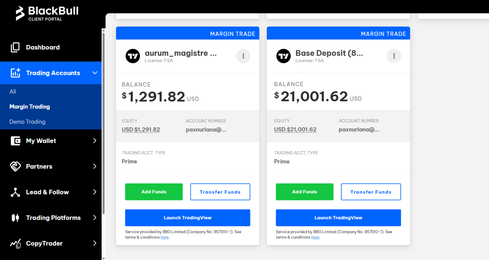
Плюс этого варианта в том, что это полностью ваш счёт: вы сами решаете, как им управлять, и не зависите от правил сторонней компании.
Но большой собственный капитал на старте есть не у каждого — поэтому рассмотрим второй вариант.
Prop-компании позволяют трейдерам получить доступ к более крупному торговому капиталу без необходимости сразу иметь десятки тысяч долларов собственных денег.
Вы покупаете специальный отбор — challenge — и торгуете по правилам компании. Если проходите его, вам предоставляют торговый аккаунт.
Например, существуют аккаунты на $50 000, $100 000 и больше.
После этого вы можете торговать и получать свою часть прибыли в виде выплат.
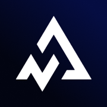
Alpha Capital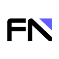
FundedNext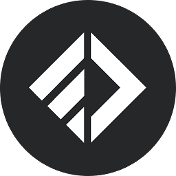
FTMO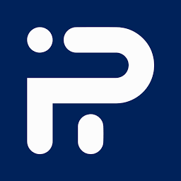
Funding PipsЕсть prop-компании для торговли фьючерсами и отдельные компании для CFD. У всех отличаются стоимость отбора, допустимый убыток, правила торговли и условия выплат.
Чтобы не открывать десятки сайтов вручную, можно использовать сервис Prop Firm Match.
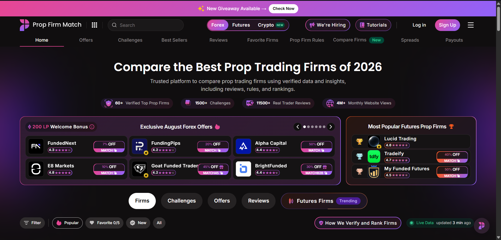
На нём можно посмотреть разные prop-компании, сравнить их условия и подобрать подходящий вариант.
То есть большой собственный депозит не является обязательным условием для старта. Можно начать со своих денег, а можно сначала научиться торговать и затем получить доступ к более крупному капиталу через prop-компанию.
Для основной работы и открытия сделок мне хватает TradingView.
Но часть анализа я дополнительно провожу в ATAS.
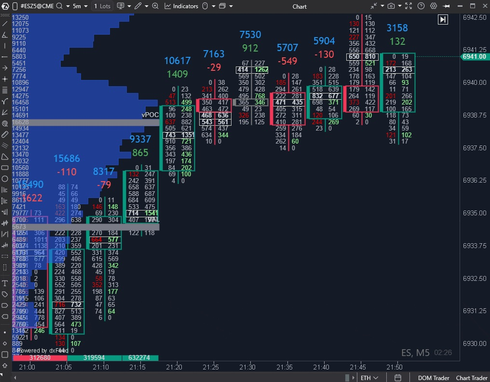
Там я смотрю фьючерс GC — это биржевой фьючерс на золото. Он позволяет работать с реальными биржевыми объёмами и глубже видеть, где на рынке действительно проходили сделки.
Если вы только начинаете, ATAS вам пока не обязателен. Для старта достаточно TradingView.
Но если вы уже немного освоились в трейдинге и хотите глубже работать с объёмом и фьючерсным рынком, ATAS будет полезен.
Теперь вы понимаете, где можно торговать и какие платформы для этого понадобятся.
Следующий шаг — понять как именно торговать.
Я торгую в основном золото и не пытаюсь искать сделки в течение всего дня. У меня есть конкретное торговое окно, которому я уделяю около двух часов.
Чтобы понять, почему я выбрал именно это время, сначала нужно разобраться в одной особенности рынка золота.
Дважды в день в Лондоне проходит электронный аукцион, на котором определяется LBMA Gold Price — эталонная цена золота на текущий день. Именно на неё ориентируются банки, дилеры и другие участники рынка при расчётах и котировках золота, и именно эту цену мы видим с вами в банках и обменниках
Первый аукцион проходит в 10:30 по Лондону, второй — в 15:00.
Меня интересует именно второй — PM Gold Fix, потому что в момент его начала и сразу после него на золоте часто появляются интересные движения, которые я и стараюсь использовать в торговле.
Если объяснить максимально просто, во время аукциона крупные участники рынка - центральные банки, крупнешие банки мира, и другие институциональные учатстники подают заявки на покупку и продажу золота. Цена меняется до тех пор, пока объём спроса и предложения не придёт к необходимому балансу.
При этом сам PM Fix не является торговым сигналом. В 19:00 золото не обязано обязательно расти или падать.
Это конкретный момент дня, вокруг которого регулярно появляется высокая активность на рынке золота и который я наблюдал на протяжении большого количества торговых дней.
Если долго наблюдать один и тот же рынок в одно и то же время, постепенно начинаешь видеть повторяющиеся сценарии.
Каждый день выглядит по-разному, но сама логика движения часто повторяется: импульс, возврат к объёму, реакция от важной области, пробой или продолжение движения.
Я называю это своего рода «глюком в матрице».
Наша задача — как в «Матрице» найти глюк системы и эксплуатировать его, пока он приносит деньги.
Я изучаю один инструмент в одном и том же временном окне и стараюсь максимально хорошо понимать именно его.
Теперь покажу, что конкретно я делаю перед сделкой.
Я не открываю график ровно в 19:00 и сразу не начинаю искать Buy или Sell.
Сначала мне нужно понять, что золото делало до этого момента.
Я смотрю старший таймфрейм — в основном 4 часа — и анализирую движение текущего дня.
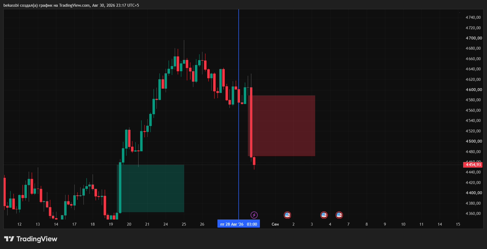
— откуда началось движение;
— росла или падала цена;
— где проходили сильные импульсы;
— где рынок остановился;
— в каком состоянии цена подходит к 19:00.
Это я называю нарративом дня.
Проще говоря — это история текущего торгового дня.
Если золото весь день последовательно растёт и удерживает движение вверх — у меня один сценарий.
Если весь день идёт сильное снижение — другой.
Если цена несколько часов стоит примерно на одном месте — третий.
Я не пытаюсь угадать, куда цена пойдёт дальше. Сначала я хочу понять, что рынок уже показал мне к этому моменту.
Но одного свечного графика для этого недостаточно.
Поэтому дальше я смотрю объём.
Обычный график показывает, куда двигалась цена.
Volume Profile показывает, по каким ценам внутри этого движения проходил торговый объём.
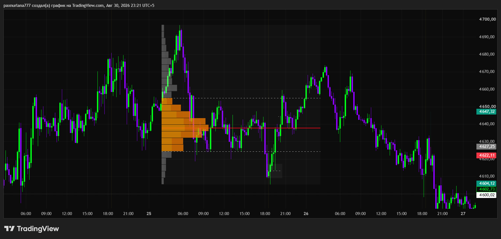
Я могу выбрать конкретный промежуток времени и посмотреть, где участники рынка торговали наиболее активно.
Например, я строю Volume Profile:
— на весь текущий день;
— на отдельный участок рынка;
— на последний час перед PM Fix с 18:00 до 19:00.
Так я понимаю, где внутри дня сформировались основные области объёма и как относительно них сейчас находится цена.
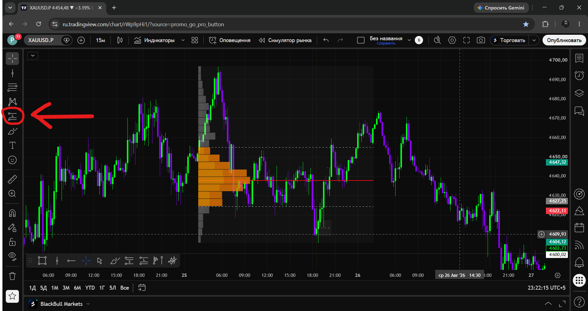
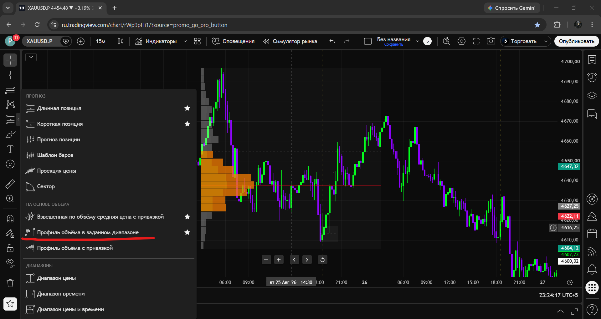
В TradingView я использую Fixed Range Volume Profile.
Вы выбираете инструмент и просто отмечаете на графике начало и конец периода, который хотите посмотреть.
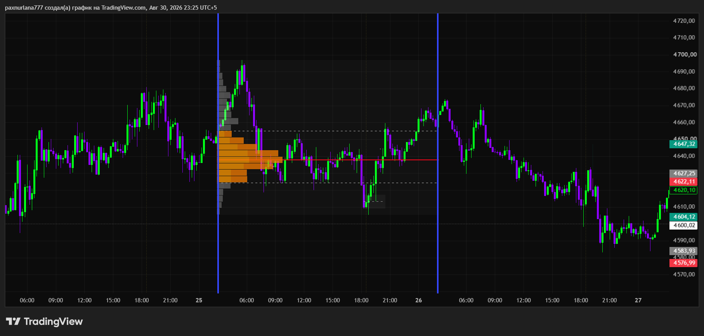
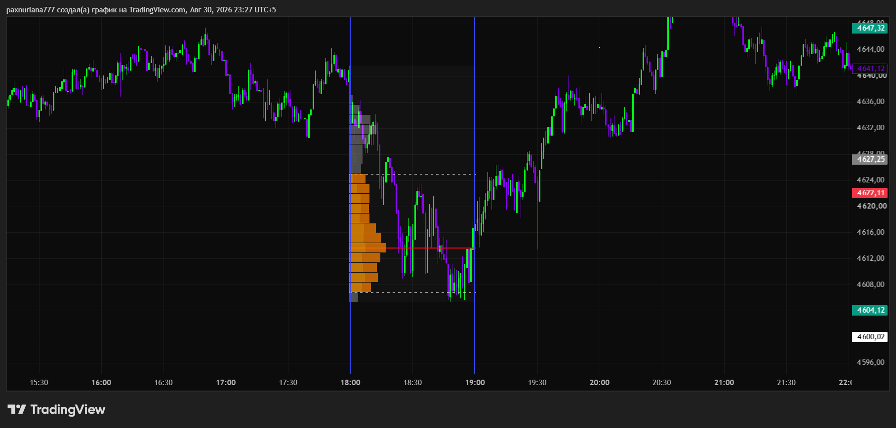
В самом профиле достаточно понимать несколько основных обозначений.
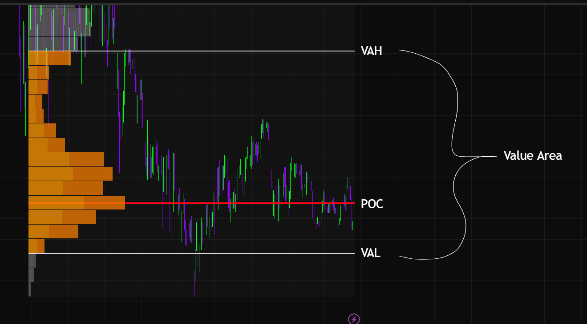
Мне важно видеть, где находилась основная торговая активность и что цена делает относительно этих областей.
Если цена находится внутри Value Area — это одна ситуация.
Если рынок выходит из неё и начинает удерживаться выше или ниже — уже другая.
Допустим, в течение дня золото двигалось вверх.
По старшим таймфреймам у меня уже сформировался лонговый сценарий.
В течение лонгового дня цена возвращается к дневному POC — уровню, где прошёл максимальный объём.
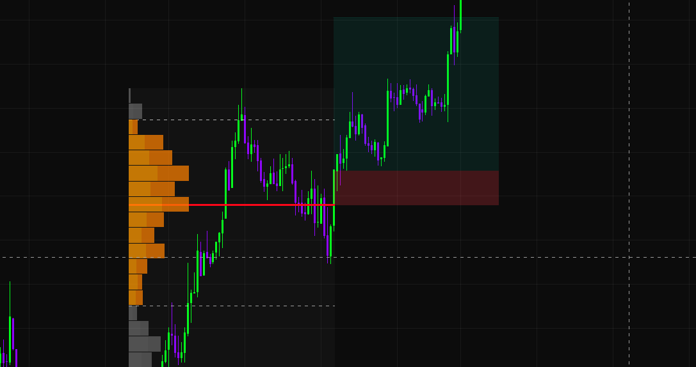
Я не покупаю просто потому, что цена коснулась POC.
Я смотрю, что цена делает возле этой области.
Если появляется реакция покупателей, рынок удерживает уровень и текущая сессия подтверждает мой контекст — я могу искать продолжение движения.
Другой пример.
Цена несколько раз приходит к VAL — нижней границе Value Area — и каждый раз отскакивает от неё всё слабее.
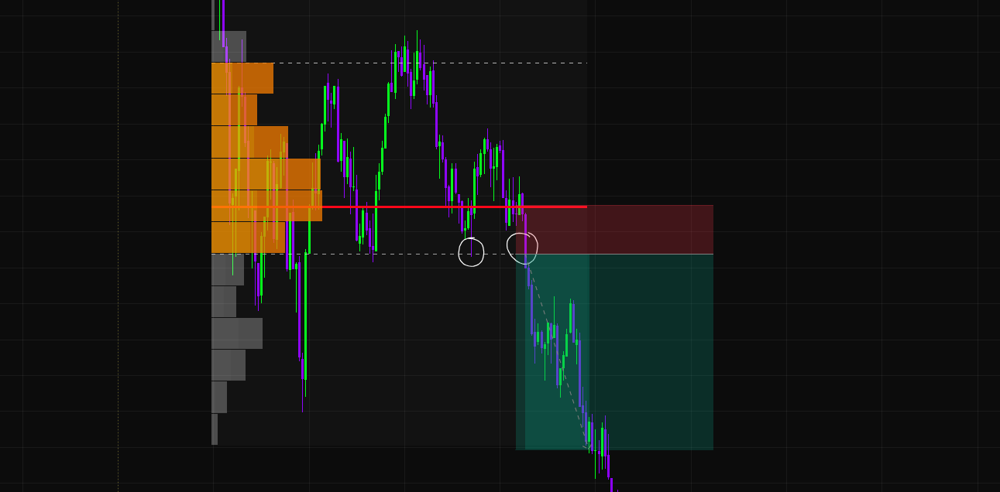
Если при следующем подходе рынок уже не даёт сильной реакции и начинает принимать цену за этой областью, я могу рассматривать сделку в сторону пробоя.
Мне важна не сама линия, а поведение цены возле неё. Именно здесь в анализ включается Price Action.
Price Action — это то, как цена ведёт себя в интересующей меня области.
Я смотрю:
— появляется ли сильная реакция;
— удерживается ли уровень;
— происходит ли пробой;
— появляется ли импульс;
— возвращается цена обратно или продолжает движение.
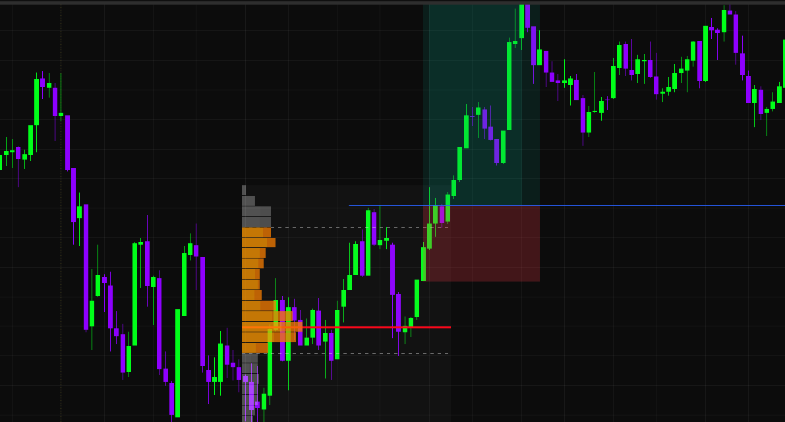
Volume Profile показывает мне где смотреть.
Price Action помогает понять, что рынок делает в этом месте.
К 19:00 у меня уже есть примерное понимание дня, расположение объёма и области, которые меня интересуют.
Но после начала моего торгового окна самым важным становится уже то, что рынок делает прямо сейчас.
Контекст дня даёт мне первоначальный сценарий.
Но я не привязан к нему.
Если после 19:00 рынок начинает вести себя совершенно иначе, для меня важнее текущая сессия, чем первоначальная идея.
И для анализа происходящего внутри сессии я использую ещё один инструмент — VWAP.
VWAP расшифровывается как Volume Weighted Average Price.
Если говорить просто, он показывает среднюю цену за выбранный период с учётом того, какой объём прошёл по разным ценам.
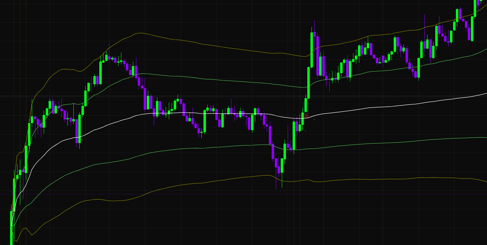
В отличие от обычного горизонтального уровня, VWAP двигается вместе с рынком.
Поэтому для меня это динамический ориентир текущей сессии.
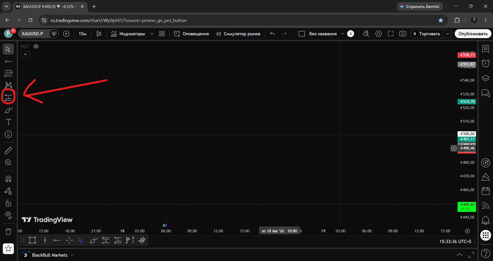
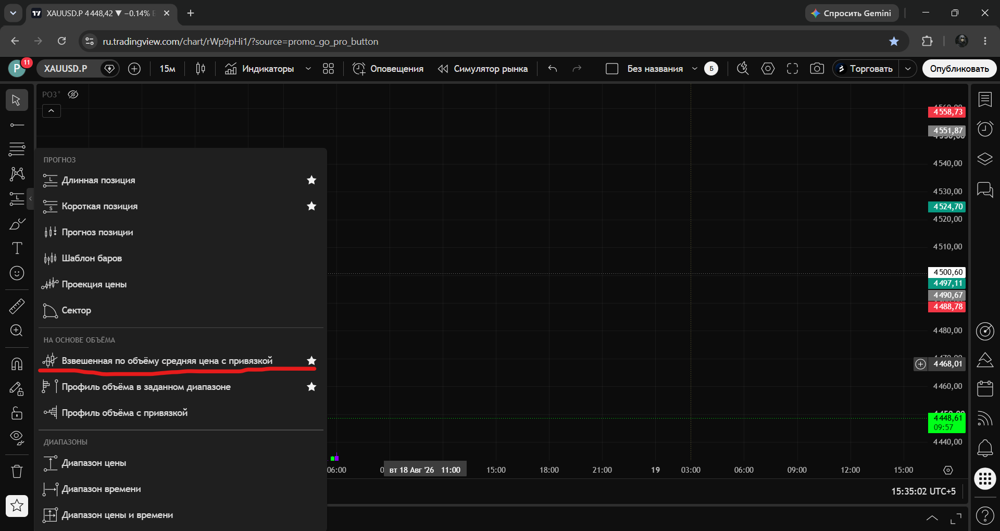
Я начинаю отсчёт VWAP с начала своего основного торгового окна — примерно с 19:00.
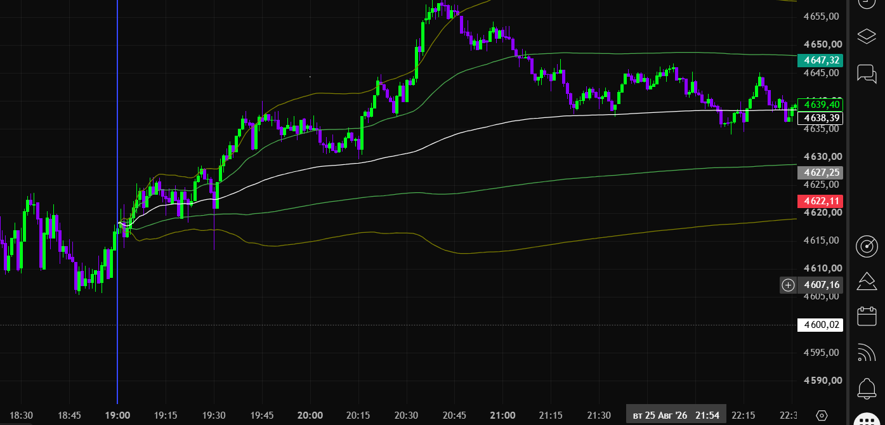
После этого смотрю, как цена ведёт себя относительно него.
Если цена уверенно находится выше VWAP и откаты к нему выкупаются — это может говорить о силе покупателей.
Если рынок находится ниже и попытки вернуться выше заканчиваются продажами — ситуация обратная.
Если цена постоянно проходит VWAP вверх и вниз — рынок может находиться во флете.
Также я использую VWAP как динамический уровень поддержки и сопротивления.
Допустим, по анализу дня я рассматриваю движение вниз.
После 19:00 цена держится ниже VWAP, затем делает к нему откат снизу.
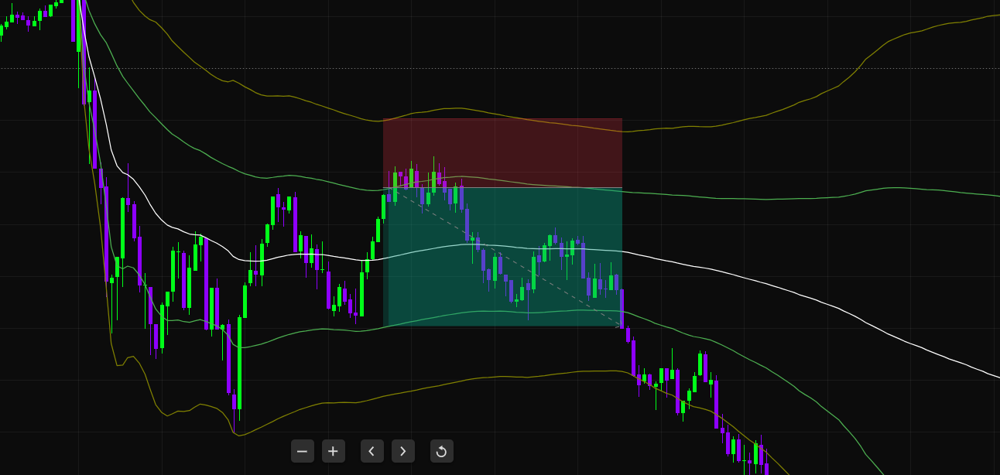
В этот момент я смотрю Price Action.
Если появляется нормальная реакция продавцов, Volume Profile не противоречит сделке, а текущая сессия подтверждает мой сценарий — у меня появляется несколько факторов в пользу одного решения.
Тогда я могу искать вход.
Но если цена пробивает VWAP вверх, начинает удерживаться выше и текущая сессия показывает совершенно другую картину — я не буду продавать только потому, что до 19:00 ожидал снижение.
Для меня то, что рынок делает сейчас, важнее первоначального прогноза.
Несмотря на количество инструментов, моя последовательность анализа достаточно простая.
Это и есть основа моей стратегии.
Я не использую Volume Profile, VWAP или Price Action как отдельные стратегии.
Они работают вместе.
Сначала я понимаю, что происходило с рынком до моего прихода. Затем смотрю, где находится объём. После начала PM Fix наблюдаю за текущей сессией и только после этого принимаю торговое решение.
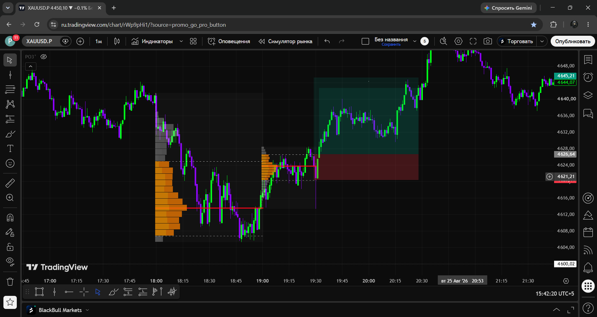
Контекст → объём → реакция → вход.
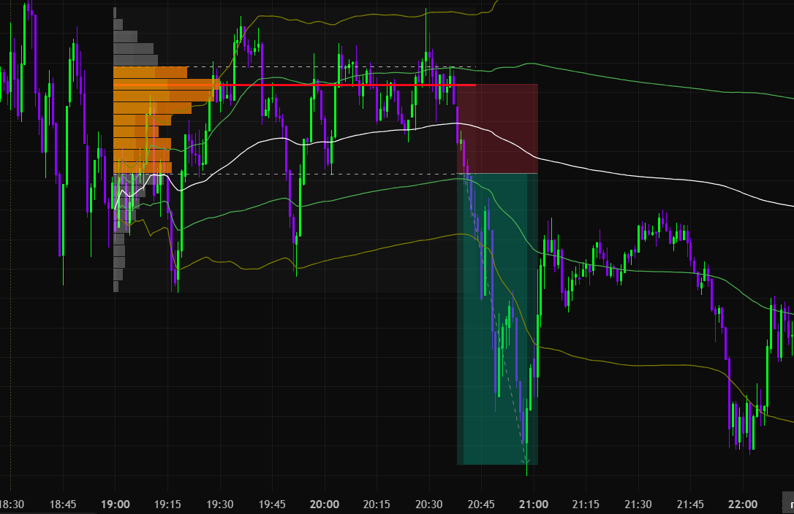
Ещё один пример сделки внутри моего торгового окна.
Вот к таким результатам приводит меня моя стратегия.
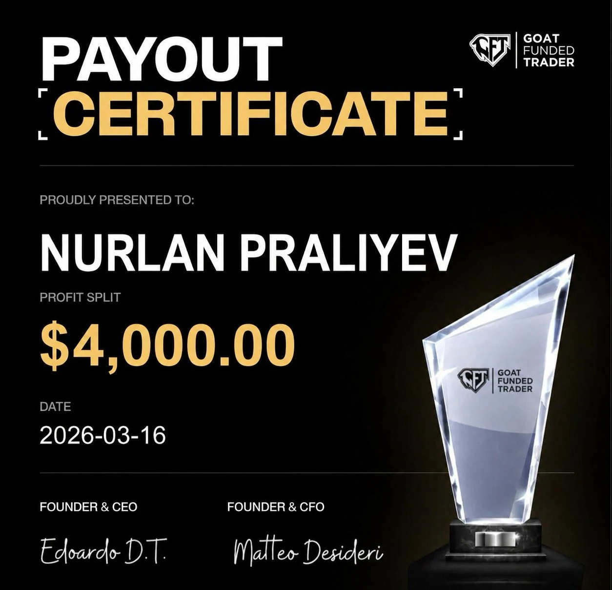
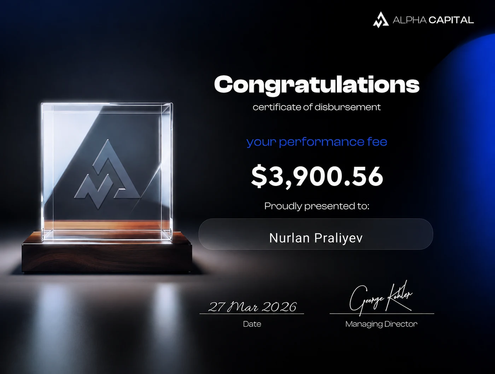
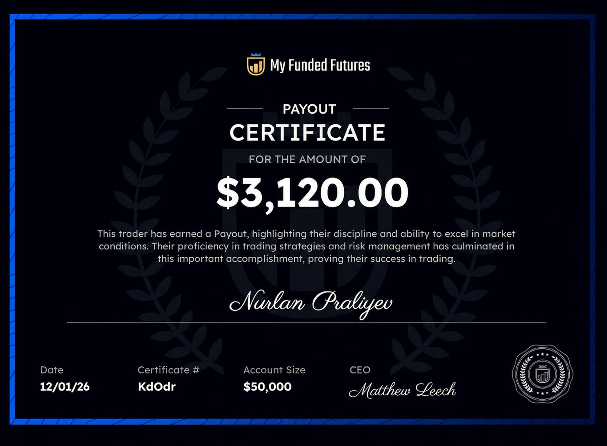
Я не сижу перед графиком весь день и не пытаюсь поймать каждое движение золота. У меня есть конкретное время, понятная последовательность анализа и одни и те же инструменты, которыми я пользуюсь каждый день.
Если вы хотите научиться применять эту систему самостоятельно, стабильно торговать и зарабатывать — приглашаю на своё обучение. Нажмите, чтобы посмотреть программу.
Но умение находить сделку — это ещё не весь путь.
Следующий шаг — понять, как превратить знания и отдельные хорошие сделки в стабильную торговлю и результат на дистанции.
Теперь вы понимаете, как устроена моя торговля: когда я выхожу на рынок, что анализирую и по какой логике ищу сделки.
Но знать стратегию — ещё не значит быть прибыльным трейдером.
Кроме точки входа есть ещё несколько вещей, без которых торговля быстро превращается в хаос.
Заранее понимать, сколько вы готовы потерять в каждой сделке, и не ставить весь счёт на одну идею.
Торговать только тогда, когда есть ваш сценарий, а не входить от скуки или пытаться отыграться после стопа.
Сохранять сделки, причины входа и ошибки.
Смотреть не на одну сделку, а на серию сделок и понимать, действительно ли система работает на дистанции.
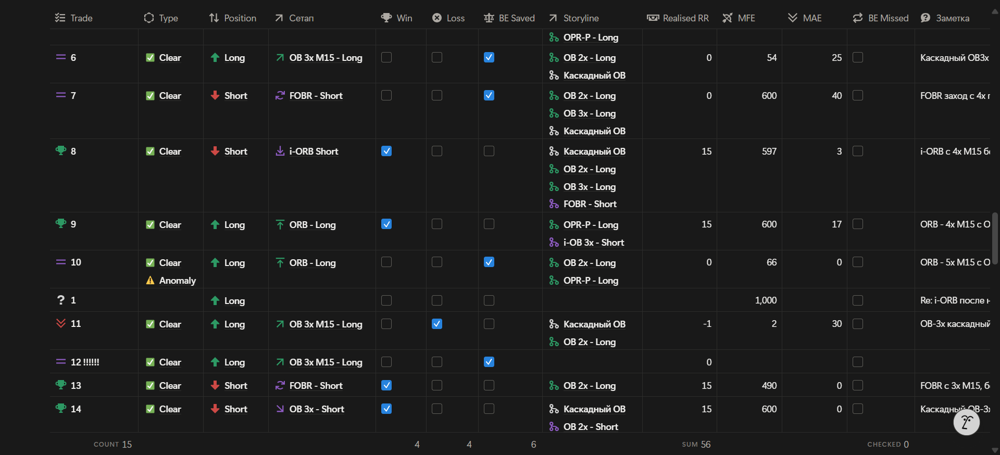
Мне регулярно пишут люди, которые уже несколько лет занимаются трейдингом, изучили десятки стратегий, пробовали SMC, ICT, индикаторы и разные подходы, но всё равно продолжают терять деньги или не могут выйти на стабильный результат.
Я хорошо понимаю этих людей, потому что сам прошёл через похожий путь.
Почти три года я постоянно искал следующую стратегию, изучал новые подходы, тестировал разные инструменты и думал, что мне просто не хватает какой-то информации.
Мне потребовалось время, чтобы разобраться в рынке глубже, перестать метаться между подходами и собрать для себя одну понятную систему.
Сегодня эта система даёт мне стабильные результаты.
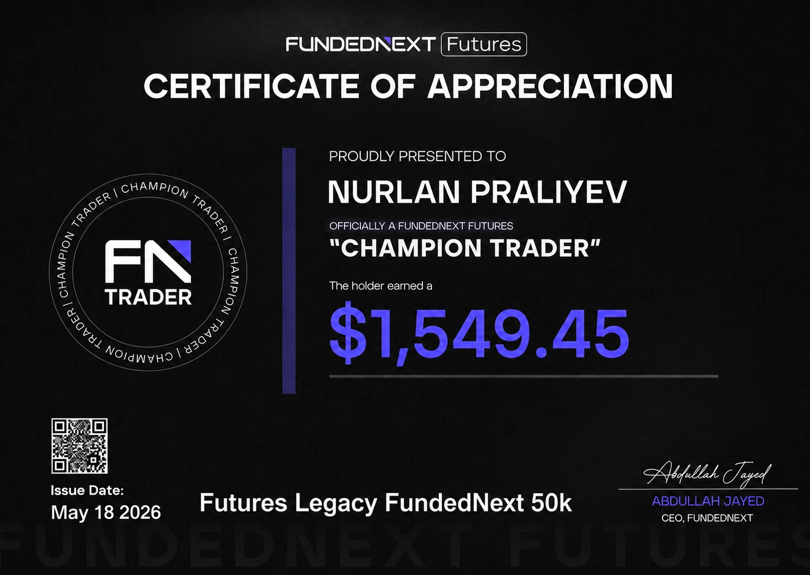
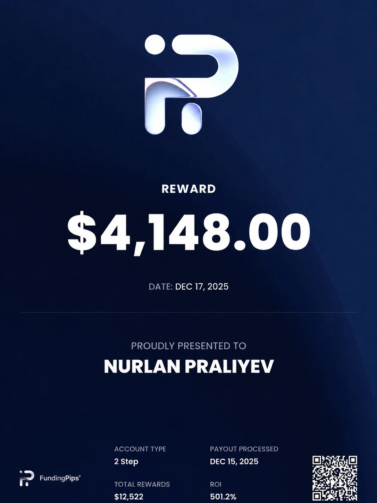
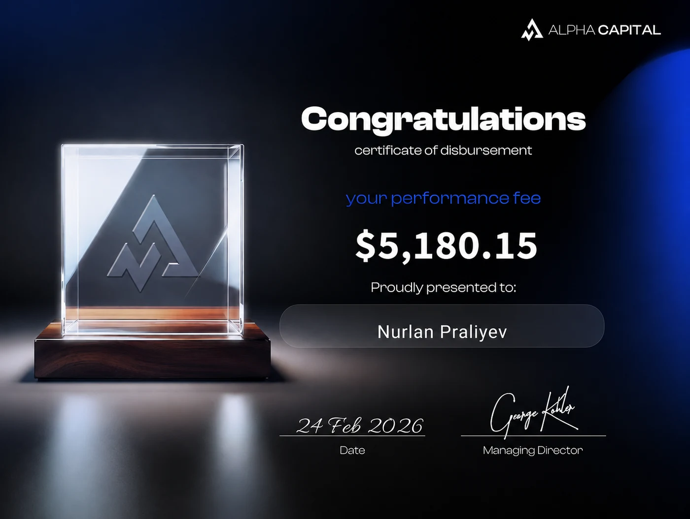
Если вы хотите пройти этот путь быстрее и не повторять те же ошибки, можете посмотреть, как устроено моё обучение.
Если вы только начинаете заниматься трейдингом, вы можете сразу получить понятную систему и не тратить несколько лет на бесконечный поиск стратегий, терминов и противоречащих друг другу видео.
Если вы уже торгуете, но до сих пор не можете прийти к стабильному результату, следующий год можно потратить не на очередной поиск новой стратегии, а на то, чтобы разобрать свои ошибки, выбрать один подход и глубоко его отработать.
Поэтому я сделал обучение не в формате короткого курса, который вы проходите за две недели и дальше остаётесь один на один с рынком.
Я специально сделал обучение годовым, потому что трейдинг нельзя нормально освоить за несколько недель. Вам нужно не просто посмотреть видеоуроки, а применять систему на реальном рынке, получать прибыльные и убыточные сделки, собирать статистику, разбирать ошибки и постепенно учиться принимать решения самостоятельно.
Внутри вы получите все уроки по моей системе торговли, доступ к сообществу и целый год работы вместе. Если вы только начинаете, сможете сразу выстроить правильный фундамент и не тратить годы на хаотичный поиск стратегий. Если уже торгуете, но стабильного результата пока нет, сможете использовать этот год, чтобы разобраться в своих ошибках и глубоко отработать один понятный подход.
При этом вам не нужно проводить перед графиком весь день. Моя собственная торговля занимает около двух часов вечером, и именно вокруг такого режима можно спокойно выстраивать регулярную практику.